Assignment 6: Real Time Ray Tracing (120 Points)
Due Wednesday 12/8/2022 at 11:59PM
You may work with a buddy on this assignment
Overview
This assignment will walk students through the construction of a real time ray tracer using a mix of Javascript and GLSL. All of the assignments we have done so far have built up to this point! Since we are using GLSL, all rays are traced in parallel, which makes this substantially faster than a CPU implementation of ray tracing. (NOTE: This was heavily inspired by a recent assignment in Princeton's computer graphics class, which is a modern version of the assignment I did a decade ago in the same class). You should expect this assignment to be very challenging and painful at times, but it is also incredibly rewarding. So stick with it!
Scoring
This assignment is out of 120 points. 85 of these points are required tasks that everyone has to do. Beyond that, there are 100 points up for grabs which you can choose from to pursue your interests and "make the assignment your own." Any points that you get beyond 35 will apply to extra credit at a rate of 1 point, 4/5 points, 4/5^2 points, 4/5^3 points, etc. The required points and the optional points will be graded independently. So, for instance, if you get an 80/85 on the required points and you earn 50 optional points, then your final score will be 80 + 35 + 4.8 = 119.8/120 points, which is quite a formidable score!
Collaboration
Since this is a very intense assignment, you are allowed to work very closely with other students in the class in a buddy capacity, and that permits looking at each others' code as you're debugging. But I expect each student to submit their own code. Please indicate to me on your README who your buddies were.
Getting Started
-
Click here to download the skeleton code for this assignment.
NOTE: You will only need to edit
raytracer.fragto complete all of the tasks in the assignment. -
You should definitely work on this using the live web server in VS Code. The entry point is the file
RayViewer.html
Debugging GUI
The main file where you view the results of your ray tracer is RayViewer.html. In this file, you can switch back between your ray tracer and the standard object-first shader with Lambertian and specular Blinn-Phong shading. You can use the object-first view to help you debug. The GUI also allows you to change the positions and colors of lights and cameras real time. Use this to your advantage to probe your program as you're debugging and to generate the most aesthetically pleasing scene if you plan to submit to the art contest. Below is a screenshot of the object-first view.
And below is an example of a ray tracer with all of the required tasks and some of the optional tasks:

Scene Graphs:
This assignment uses JSON scene graphs to specify virtual worlds. Please refer to assignment 2 for more details on the syntax. By default, the scene graph sample-scene.json (pictured above) is the scene that's loaded. This has all features that you would want to show across all required tasks, and most features you would want to show for the optional tasks (except for cylinders and cones). Have a look at that file for example syntax. Note that can also edit the parameters of the lights and materials real time in the debugging GUI.
General Tips:
- Write your shaders one step at a time! Debugging is very difficult because the only output is a color per pixel. Try to use the colors to help you debug. Some more specific suggestions will be provided in each task.
- If your shader doesn't compile, drop into the debugging console to see why. Syntax error messages will be printed there with line numbers in the shader. Step 1 is definitely just getting things to compile!
- As your shader gets longer, the compile time may increase. This will be particularly noticeable when you use more reflections. So keep the number of reflections to a minimum when you start off.
-
If your shader doesn't update, you may need to do a "hard refresh" and reset your cache. This seems to happen particularly in Google Chrome. The keyboard shortcut for this is
CTRL+SHIFT+R -
When you write a loop, you cannot have a variable number of iterations. So you will have to have a maximum number of iterations, and then
breakwhen appropriate (you can use break here!). I have tried to take care of most of these kinds of loops for you, but if you decide to do loops in one of the tasks, be mindful of this. -
If you get an error like the following
Then it probably means you need to write a number as a decimal. There is no explicit casting, so when GLSL seesERROR: 0:15: '+' : wrong operand types - no operation '+' exists that takes a left-hand operand of type 'const int' and a right operand of type 'mediump float' (or there is no acceptable conversion)10, for instance, it assumes it's an integer. So you would need to write10.0
Submission Instructions
You will submit all of your raytracer.frag code to Canvas when you are finished, along with any screenshots or videos for the art contest if you did that. Let me know a title and your name/pseudonym for the art contest.
Part 1: Ray Casting / Ray Object Intersections: Required Tasks
NOTE: By default, once you finish these tasks, the shapes whose intersects you implement properly should show up as pixels colored by the normal of the intersection. You will do more advanced shading based on lights, shadows, reflections, and transmissions in part 2. But you can compare the normals here to the normals you get in the object-first viewer by switching to the normal shader there.
Perspective Ray Casting (10 Points)
Given the uniform variables below that describe the camera and the attribute vec2 v_position, construct a ray through the scene corresponding to this fragment, assuming a perspective camera
Camera Uniforms Passed from RayViewer.html:
vec3 eye: The origin of the cameravec3 right: The right direction of the cameravec3 up: The up direction of the camerafloat fovx: The field of view in the right/towards planefloat fovy: The field of view in the up/towards plane
Code To Write
You should fill in the appropriate section of thegetRay() function.
Tips
- You are given the
rightvector and theupvector. Use an appropriate cross product (thecrossfunction in GLSL) to get thetowardsvector, via the right hand rule. You will know very quickly if you got it backwards... - Once you start to intersect rays with objects in the scene, things will be drawn to the ray canvas. At this point, if you've done this task correctly, the shapes should show up at exactly the same positions on the screen as they do on the object-first canvas. So if you made a mistake, you will see the shapes move when you switch back and forth between the two canvases.
Ray Intersect Triangle (10 Points)
Given a ray and three points spanning a triangle, find the intersection point and normal of the intersection of the ray with that triangle
NOTE: In the default scene, there are two square that are drawn. Every polygon in a scene is divided up into triangles via a triangle fan, so these squares will show up once you finish this task.
Code To Write
You should fill in the appropriate section of therayIntersectTriangle(...) function. You will return t, the ray parameter of intersection. You will also return the intersection point and normal by reference (an "out" variable in GLSL). See the parameters for more details. You only need to use MInv and N when you get to the transformation instancing task.
Tips
- A function to intersect a ray with a plane,
rayIntersectPlane(...)is provided to you as an example, and you should definitely make use of this as a subroutine in your implementation. - It might be helpful to make a function that returns the area of a triangle spanned by three points, and to use the area ratio method you implemented in assignment 1 to check that the plane intersection point is inside of the triangle.
Below are some screenshots from a working implementation, using color by normal (there are 4 triangles in view: two for each rectangle)
Object-First View |
| 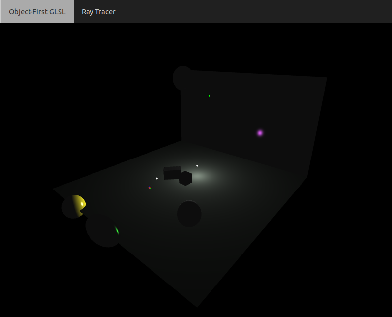 |
Ray View with color by normal |
| 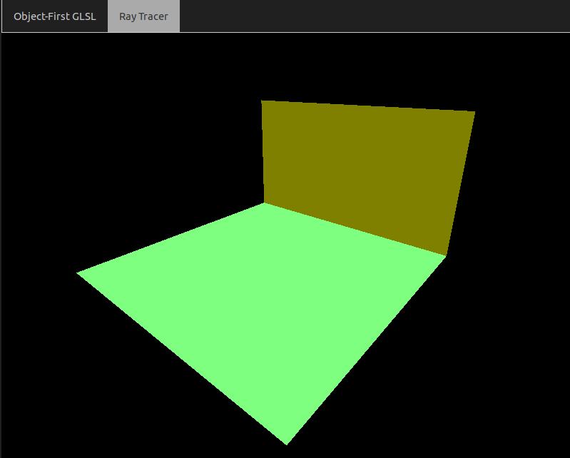 |
Ray Intersect Sphere (10 Points)
Given a ray and a sphere, find the intersection point and normal of the intersection of the ray with that sphere
Code To Write
You should fill in the appropriate section of therayIntersectSphere(...) function. You will return t, the ray parameter of intersection. You will also return the intersection point and normal by reference (an "out" variable in GLSL). See the parameters for more details. You only need to use MInv and N when you get to the transformation instancing task.
Tips
- This is exactly the same as the ray intersect sphere task from assignment 1. The only difference is that you also need to return the normal of the intersection, and you're only ever returning one point of intersection, which is the closest (so the nonnegative root with the smallest t value.
Below are some screenshots from a working implementation, using color by normal (NOTE: instancing has also been implemented for the left and middle spheres)
Object-First View |
| 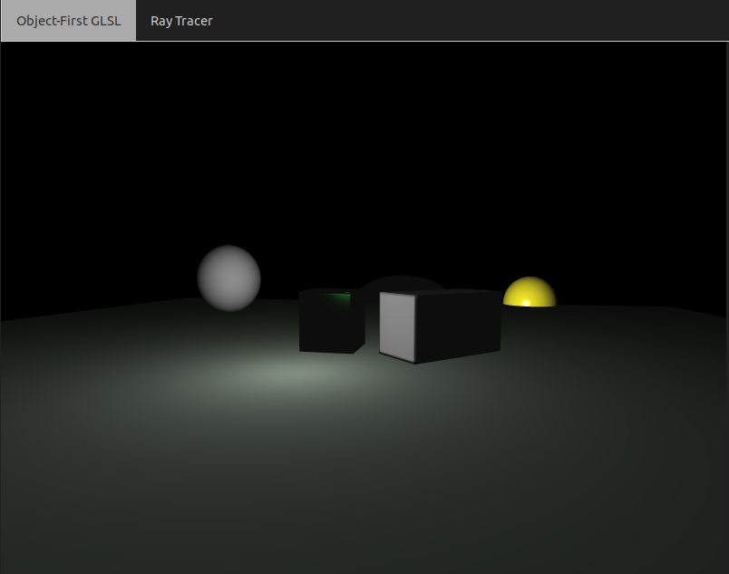 |
Ray View with color by normal |
| 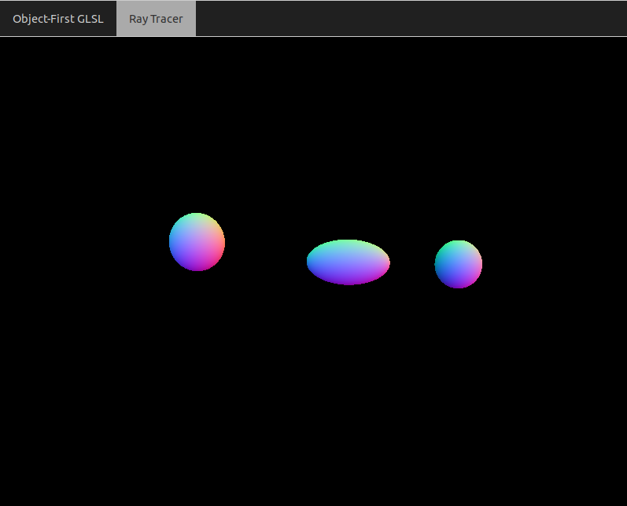 |
Ray Intersect Axis-Aligned Box (10 Points)
Given a ray and an axis-aligned box with a particular center/length/width/height, find the intersection point and normal of the intersection of the ray with that box
Code To Write
You should fill in the appropriate section of therayIntersectBox(...) function. You will return t, the ray parameter of intersection. You will also return the intersection point and normal by reference (an "out" variable in GLSL). See the parameters for more details. You only need to use MInv and N when you get to the transformation instancing task.
Tips
- The fact that this is intersecting a ray with an axis-aligned box makes this much easier. You should intersect with the 6 faces. You can use the
rayIntersectPlanefunction to help if you'd like. - It may be easy to add code to handle one face at a time. You will then see the box come into view one piece at a time.
- Since this is a convex 3D surface, a ray may intersect two faces. Make sure you're returning the intersection of the closest face to the ray.
Below are some screenshots from a working implementation, using color by normal (NOTE: instancing has been implemented for the right box, since it has been rotated and is no longer axis-aligned)
Object-First View |
 |
Ray View with color by normal |
| 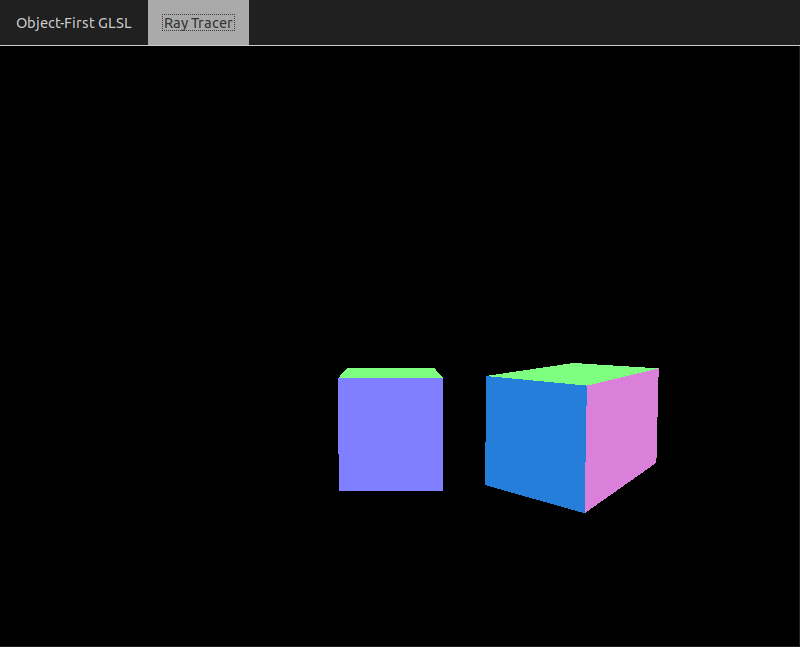 |
Ray Instancing for Transformations (10 Points)
Take into consideration a transformation matrix M that should be applied to an object before viewing. In every rayIntersectX(...) function, a 4x4 matrix MInv (the inverse of M) and a 3x3 normal matrix N are passed along, which you can use to do this task. For full credit, you should apply this to all the shapes for which you've written intersect code
Code To Write
You should add some code to eachrayIntersectX(...) function to deal with this, where X can be triangle/sphere/box/cone/cylinder.
Tips
- Transform the ray (p0, v) so that the new endpoint of the ray is MInv*vec4(p0, 1.0) and the new direction is MInv*vec4(v, 0.0) (i.e. only apply the translational part of MInv to p, not to v). You can then use this t on the original endpoint and direction to obtain the final intersection point. You will still have to apply the normal transformation N to the normal you get.
Part 1: Ray Casting / Ray Object Intersections: Optional Tasks
Orthographic Ray Casting (5 Points)
Cast rays all with the direction v = towards, and change the eye to move along the right and up directions, as discussed in class
Code To Write
You should fill in the appropriate section of thegetRay() function.
Tips
- You can toggle orthographic viewing in the "ray tracing options" menu in the debugging GUI.
Ray Intersect Cylinder (10 Points)
Given a ray and an axis-aligned cylinder with a particular radius, height, and center, find the intersection and normal of the ray. The center coincides with the center of the circular cross section halfway up the cylinder.
Code To Write
You should fill in the appropriate section of therayIntersectCylinder(...) function. You will return t, the ray parameter of intersection. You will also return the intersection point and normal by reference (an "out" variable in GLSL). See the parameters for more details.
Tips
- Have a look at some notes I wrote 10 years ago when I was working on my first ray tracing assignment.
Ray Intersect Cone (10 Points)
Given a ray and an axis-aligned cone with a particular radius, height, and center, find the intersection and normal of the ray. The center of the base coincides with the center.
Code To Write
You should fill in the appropriate section of therayIntersectCone(...) function. You will return t, the ray parameter of intersection. You will also return the intersection point and normal by reference (an "out" variable in GLSL). See the parameters for more details.
Tips
- Have a look at some notes I wrote 10 years ago when I was working on my first ray tracing assignment.
Part 2: Illumination/Materials: Required Tasks
Blinn-Phong Shading (15 Points)
Given a ray, an intersection point/normal, material properties of the intersected object, and a set of lights in the scene, add the Blinn-Phong contribution (diffuse + specular) of each light. The basic equation of the final color C at the fragment for L lights is below
\[ C = \sum_{i = 1}^L c_i \left( k_d(\vec{N} \cdot \vec{\ell_i^N}) + k_s(-\vec{v} \cdot \vec{h_i})^s \right) \]
And the equation for a light with attenuation is\[ c_i = \frac{I_0}{c_a + \ell_a d + q_a d^2} \]
where-
I0 is the original color of the light (the
colorfield of theLightstruct) -
d is the distance of the light to the point of intersection (the position of the light is the
posfield of theLightstruct) -
ca, la, and qa are constants (found as the x, y, and z components, respectively, of the
attenfield of theLightstruct).
- The diffuse coefficient
kdand the specular coefficientkscan be found as fields of the material structmthat's passed into the function -
The
eyeposition is passed in as a vec3 to the function
Code To Write
You should fill in code in thegetPhongColor(...) function.
Tips
- You should have a loop up to
MAX_LIGHTSand index into the uniform listlights, but break out of the loop before you reachnumLights(this is the weird way we have to loop in GLSL). - You may want to refer back to Module 11 where we did Phong Shading for a single light in the object-first shader. The code will actually be very similar, but you'll have to put it in a loop
Below are some screenshots from a working implementation.
Ray View |
| 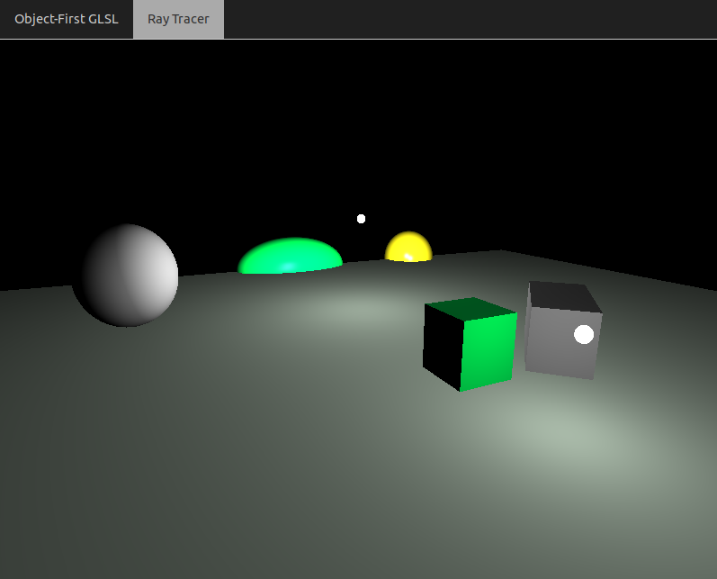 |
Point Light Shadows (10 Points)
When applying Blinn-Phong shading, only include a light if it is not blocked by an object in the scene. You can accomplish this by tracing a new ray from the point of intersection of the material towards the light (using rayIntersectScene), and seeing if it hits anything before it gets to the light.
Code To Write
You should fill in thepointInShadow(...) function. You should then call this function from the appropriate place within getPhong(...)
Tips
The easiest way to do this is if you use the direction vector of the ray as the non-normalized vector from the point of intersection VPos to the light. Then, a t of 1 in rayIntersectScene is exactly at the light, and any t < 1 means there's something it hits before that. The image below shows this
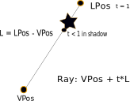- Be sure to add
EPStimes the direction to the initial point on the ray before shooting it towards the light. This is an effective hack to prevent the first object from being intersected as the object we're illuminating! Below is a screenshot of the kind of bug you will get if you forget to do this:
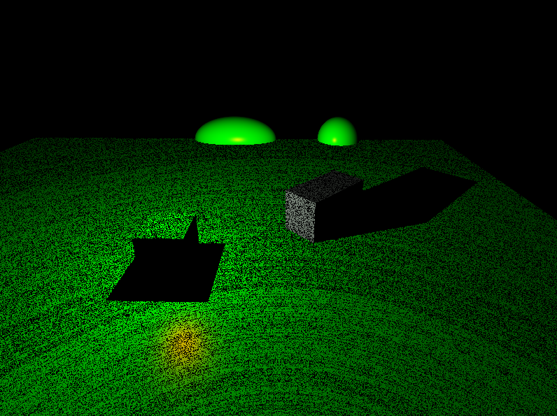
Below are some screenshots from a working implementation.
Object-First View |
| 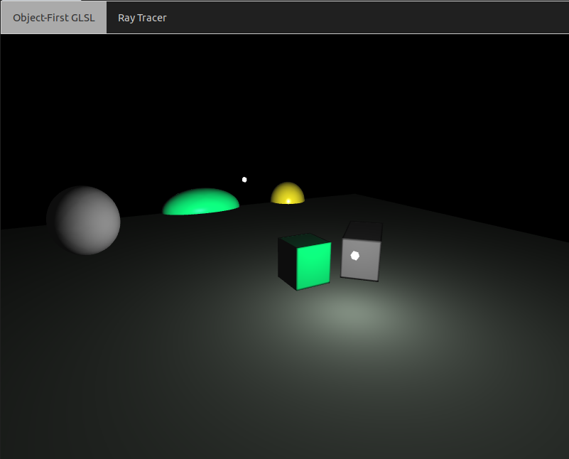 |
Ray View |
| 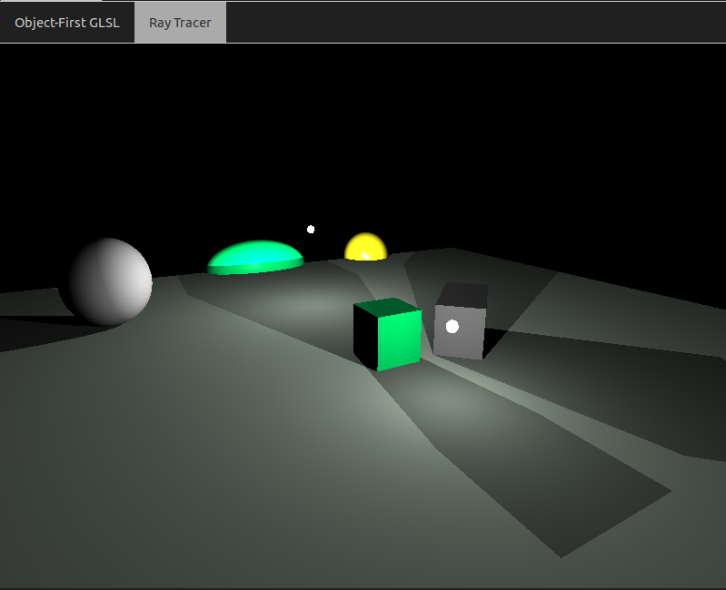 |
Mirror Material Reflections (10 Points)
If a ray hits a material with a nonzero ks term, reflect the incoming ray at the perfect angle about the normal, and continue tracing the ray through the scene. In addition to the Phong light of the material, you should accumulate any light that makes it back from this reflected ray, scaled down by the ks term.
Code To Write
Fill in appropriate parts of the "recursive" loop in themain() function. You should accumulate a weight term as a product of ks terms as you go along. this weight term gets multiplied as an additional factor on front of Phong colors at each iteration.
Tips
- You should increase the
MAX_RECURSIONmacro to include multiple bounces. But be warned, the compile time increases substantially as you increase this number. So start it off around 2 as you're debugging, so you at least get one reflection - The reflect function in GLSL may come in handy in this task
- As with the shadows, be sure to add
EPStimes the direction to the initial point on the ray before shooting it at the perfect angle out.
Below are some screenshots from a working implementation with MAX_RECURSION as 3 (up to second order reflections), with the purple "looking glass" sphere that's placed at the top of the scene. The reflection of objects off of the rectangular mirror and again off of the sphere are visible.
Object-First View |
| 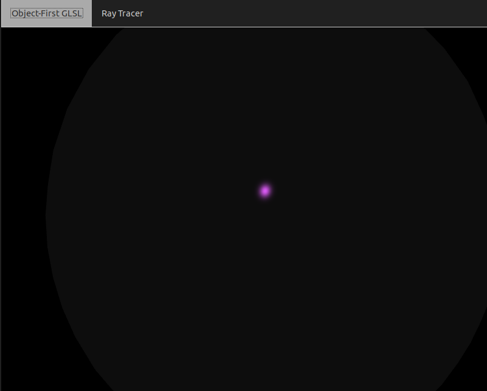 |
Ray View |
| 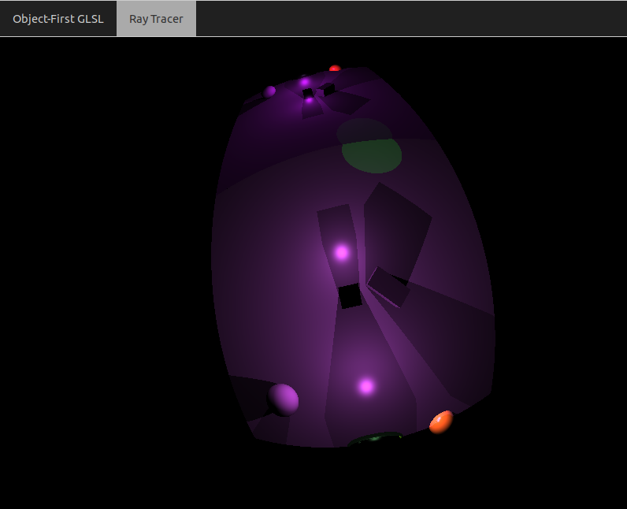 |
Part 2: Illumination/Materials: Optional Tasks
Spot Lights (10 Points)
In addition to the shadow term, also restrict a light so that it only illuminates parts of the scene that are within a cone determined by a direction vector and a maximum angle that light rays are allowed to make with that vector.
Code To Write
Add some code inside the light loop in thegetPhongColor(...) function that checks the angle that the light ray makes with the towards field of the light struct, and compares it with the angle of the light struct. To test this, you should add a spotlight to your scene. The code below would add a green spotlight, for example
Below is a screenshot from a working ray tracer implementing with three spotlights of different colors. Note the pattern of their overlap as the colors blend together
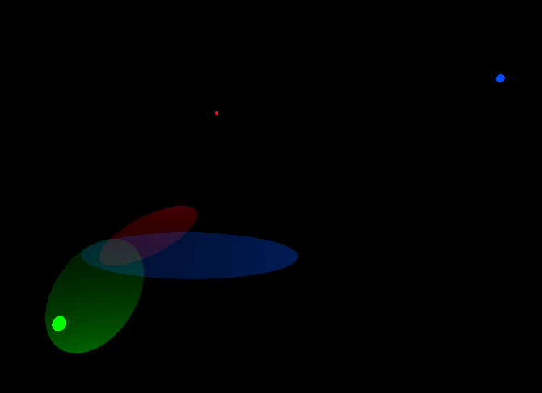Box Checkerboard Pattern (10 Points)
Create a checkerboard pattern on a box if the special field of its material is activated.
Code To Write
Add some code inside the therayIntersectBox(...) to record a number between 0 and 1 which gets added on as a term in front of the diffuse term kd. Store this number in the sCoeff field of the intersect term. Then use this term in the getPhongColor(...) function in front of the diffusion coefficient if the special flag of the material is 1.
Tips
- The function \[ cos(x)cos(y) \] over two different coordinates x and y gives an "egg carton" pattern. You simply need to threshold this so that
sCoeffgets a 0 if this product is negative, or a 1 if this product is positive. See below:
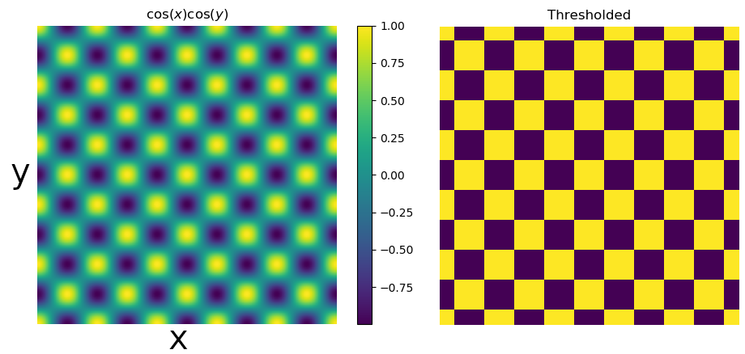
Below is a screenshot of a box with the special material enabled.

Sphere Checkerboard Pattern (10 Points)
Create a checkerboard pattern on a sphere if the special field of its material is activated.
Code To Write
Add some code inside the light loop in therayIntersectSphere(...) to record a number between 0 and 1 which gets added on as a term in front of the diffuse term kd. Store this number in the sCoeff field of the intersect term. Then use this term in the getPhongColor(...) function in front of the diffusion coefficient if the special flag of the material is 1.
Tips
- You can use the spherical coordinates of the intersection point to help you. Let the normal be as such: \[ \vec{n} = (n_x, n_y, n_z) \]
Then let
\[ \phi = \cos^{-1}(n_z) \]
and
\[ \theta = \tan^{-1}(n_y/n_x) \]
Then you can take \[ \cos(n\phi) \cos(n \theta) \]
for some integer n to wrap the checkerboard around the sphere n times along the azimuth and elevation. (Actually, you should call
atan(n.y, n.x) to compute theta)
Below is a screenshot of a sphere with the special material enabled.
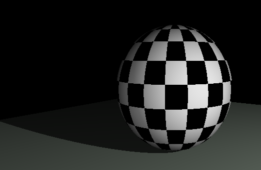
Soft Shadows (15 Points)
Implement soft shadows based on area lights by randomly sampling rays from the point of intersection to a spherical neighborhood around the light location. You can use the uniform beaconRadius as the radius of the sphere, since that's the radius with which the lights are rendered in the GUI.
Code To Write
You should write something likepointInShadow(...) function, but which returns a floating point value between 0 and 1 instead of a boolean. You should then call this function from the appropriate place within getPhong(...) and scale the light color by this value.
Tips
- One of the trickiest parts about this task is randomly sampling. GLSL has no random functions in it, so you'll have to do something like this or like this.
- The shadows will look better the more random samples you take, but the rendering engine will slow down substantially once you exceed 20 or so samples. So you might want to position your camera with a lower number of samples, save it in the scene, and then reload the scene using a higher number of samples for the art contest.
Below is a GIF of a working implementation of soft shadows using the first random sampling technique, with an increasing number of random samples per pixel
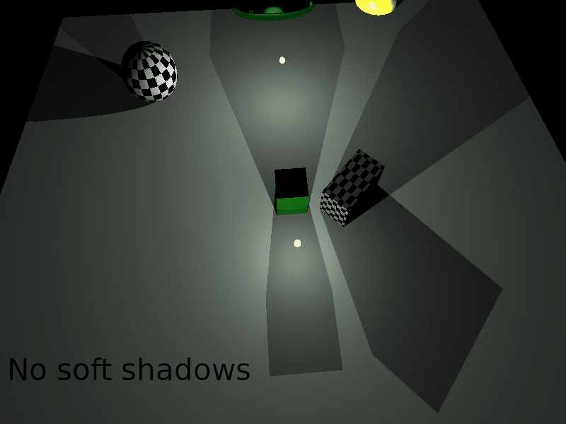
Transmission with Refraction (20 Points)
If any of the components of the transmission coefficient kt of a material are greater than zero, then perform a transmission instead of a reflection (since we can only do tail recursion in GLSL); that is, shoot a ray through the material in a direction determined by Snell's law
\[ \nu_i \sin(\theta_i) = \nu_j \sin(\theta_j) \]
where thetai is the incident angle, and thetaj is the transmitted angle on the other side. You can assume that the refraction index nu outside of the material is 1, and the refraction index inside of the material is the refraction field of the material struct.
Code To Write
Fill in appropriate parts of the "recursive" loop in themain() function. You will be adding something in addition to the code you have to do reflections, and you will be doing one or the other (so have an if statement to do either reflection or refraction). You should accumulate a weight term as a product of ks and kt terms as you go along, depending on whether you decide to reflect or refract, respectively.
You can use the implementation of WebGL's refract function to help you. They use a trick with the Pythagorean trig identity (sin(x) = sqrt(1 - cos2(x)) ) so that it's possible to calculate the sin using dot products. There is one major difference that you'll need in your implementation for full credit, however. If they find that there is no real solution to the equation, they return the zero vector. But at that point, you should instead return the reflection. This simulates what's known as total internal reflection, and it's what gives the "bubble effect" when the index of refraction in the sphere is less than 1. So you can start with their code but tweak it a bit.
The animation below shows a working implementation. Note how when the index of refraction inside the sphere is 1, it's simply a transparent object. On the other hand, when the index is greater than 1, it reflects a warped version of what's in front of it upside down. And when the index of refraction is less than 1, it looks like a bubble (since this is what would happen with air having a smaller index of refraction relative to the water that surrounds it).

Tips
-
Remember that the indexes of refraction flip when you're on the inside or the outside, so be sure to pay attention to the
insideObjflag in the reflection/transmission loop.
Part 3: Other Optional Tasks
Antialiasing (15 Points)
Implement antialiasing to get rid of the "jaggies" that occur on boundaries of objects, by randomly sampling rays with some "jitter" around the initial ray.
Code To Write
You should replace the singlerayIntersectScene(...) call in the main() function with multiple calls to rayIntersectScene. So you will want a nested loop inside of the recursion loop.
Tips
- This is similar to soft shadows task in many ways, since you have to generate many random rays per pixel.
Something Else (5-20 Points)
Implement something I hadn't thought of! Possible ideas include a fisheye lens, depth of field effects, or some material other than a checkerboard, such as a solid noise (11.1.3) or a turbulent material (11.1.4).
Art Contest Submission (5 Points)
You just created an amazing rendering engine. Do something creative with it! The winner will get 5 points of extra credit tacked onto the end of their final score. You should submit an appropriate scene file along with your submission, as well as several screenshots of your scene from different angles that really show it off.